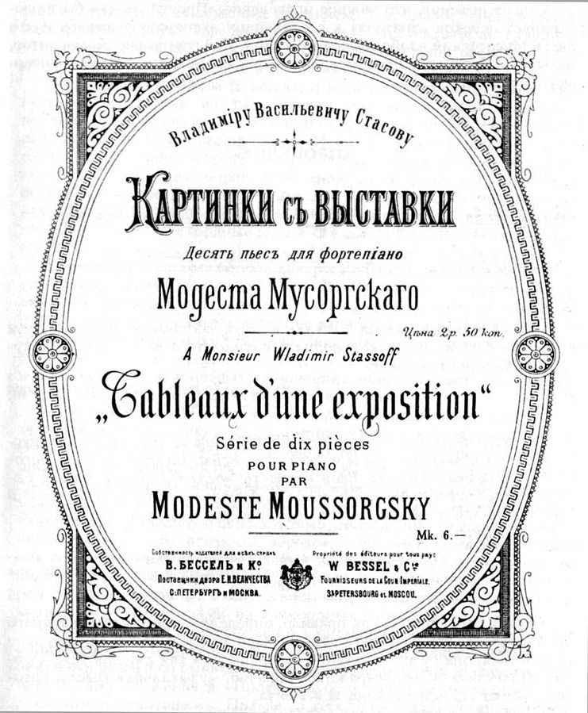

Instrumentación
Clase 008

L' Orfeo
Claudio Monteverdi
“Brandenburg Concerto No. 2 in F major" BWV 1047”
Johann Sebastian Bach
Orquestas triples, pares y de salón
Cuadros de una Exposición
Modest Músorgski
Músorgski / Stasov / Hartmann

Orquestación de Maurice Ravel

Space is the Place
Sun Ra
Four Meditations for Orchestra
Pauline Oliveros

008